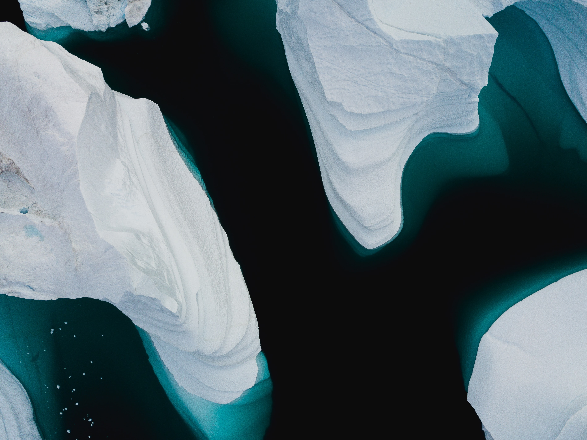
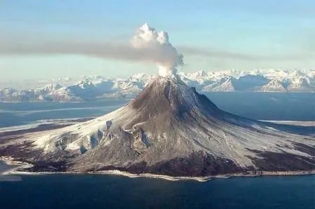
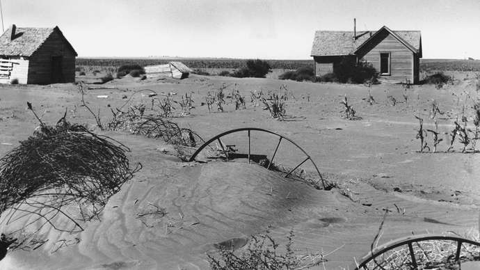
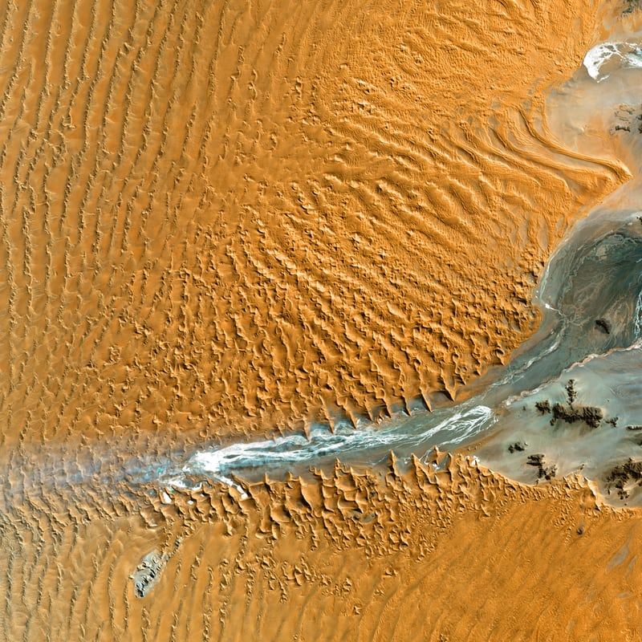

Humans are faced with many challenges, one of which is climate change. So what is cliamte change ?

Actually it is very easy to understand this term. Climate change occurs when the Earth’s average temperature changes dramatically over time. As little as one or two degrees can be considered dramatic change because the Earth’s ecosystem depends on a very delicate balance, and even small shifts can have a far-reaching impact. A drop in average temperature can also be considered climate change, but in modern times people using the term are usually talking about global warming.
What can cause climate change?
We all know climate change is happening around us, but many people don't realize that our behaviour can lead to it. Actuclly it just happens every time in our daily life. Let us see how we destory our home without notice.
Solar variability
The luminosity, or brightness, of the Sun has been increasing steadily since its formation. This phenomenon is important to Earth’s climate, because the Sun provides the energy to drive atmospheric circulation and constitutes the input for Earth’s heat budget. Low solar luminosity during Precambrian time underlies the faint young Sun paradox, described in the section Climates of early Earth.Radiative energy from the Sun is variable at very small timescales, owing to solar storms and other disturbances, but variations in solar activity, particularly the frequency of sunspots, are also documented at decadal to millennial timescales and probably occur at longer timescales as well. The “Maunder minimum,” a period of drastically reduced sunspot activity between 1645 and 1715, has been suggested as a contributing factor to the Little Ice Age.
Volcanic activity
Volcanic activity can influence climate in a number of ways at different timescales. Individual volcanic eruptions can release large quantities of sulfur dioxide and other aerosols into the stratosphere, reducing atmospheric transparency and thus the amount of solar radiation reaching Earth’s surface and troposphere. A recent example is the 1991 eruption in the Philippines of Mount Pinatubo, which had measurable influences on atmospheric circulation and heat budgets. The 1815 eruption of Mount Tambora on the island of Sumbawa had more dramatic consequences, as the spring and summer of the following year (1816, known as “the year without a summer”) were unusually cold over much of the world. New England and Europe experienced snowfalls and frosts throughout the summer of 1816.Volcanoes and related phenomena, such as ocean rifting and subduction, release carbon dioxide into both the oceans and the atmosphere. Emissions are low; even a massive volcanic eruption such as Mount Pinatubo releases only a fraction of the carbon dioxide emitted by fossil-fuel combustion in a year. At geologic timescales, however, release of this greenhouse gas can have important effects. Variations in carbon dioxide release by volcanoes and ocean rifts over millions of years can alter the chemistry of the atmosphere. Such changeability in carbon dioxide concentrations probably accounts for much of the climatic variation that has taken place during the Phanerozoic Eon.

It seems that the reasons above is far away from our life, but it reminds us climate change is happening at any time even without effects of human-being. And the reasons below are quite close to our life.
Emission of greenhouse gas
Recognition of global climate change as an environmental issue has drawn attention to the climatic impact of human activities. Most of this attention has focused on carbon dioxide emission via fossil-fuel combustion and deforestation. Human activities also yield releases of other greenhouse gases, such as methane (from rice cultivation, livestock, landfills, and other sources) and chlorofluorocarbons (from industrial sources). There is little doubt among climatologists that these greenhouse gases affect the radiation budget of Earth; the nature and magnitude of the climatic response are a subject of intense research activity. Paleoclimate records from tree rings, coral, and ice cores indicate a clear warming trend spanning the entire 20th century and the first decade of the 21st century. In fact, the 20th century was the warmest of the past 10 centuries, and the decade 2011–20 was the warmest decade since the beginning of modern instrumental record keeping. Many climatologists have pointed to this warming pattern as clear evidence of human-induced climate change resulting from the production of greenhouse gases.
Deforestation
A second type of human impact, the conversion of vegetation by deforestation, afforestation, and agriculture, is receiving mounting attention as a further source of climate change. It is becoming increasingly clear that human impacts on vegetation cover can have local, regional, and even global effects on climate, due to changes in the sensible and latent heat flux to the atmosphere and the distribution of energy within the climate system. The extent to which these factors contribute to recent and ongoing climate change is an important, emerging area of study.

Other reasons In facct, not only actions in such big scale can raise our temperature, but also some small one.Like wasting water, driving your own private car, using plastic bags. They are produing pollution as well.
Effects of climate change
Some people may know they are causing the climate change, but don't know why is serious. Just imaging the temperature rising year by year, and one day there will be no snow on the Alps. This is just an example. Climate change is not that easy as we understand it. Scientists and volunteers around our world are try to stop it due to its serious consequences.
Global warming has various consequences.
Heat waves occur more often, rainfall becomes more intense and the sea level rises. Especially within vulnerable areas, such as Sub-Saharan Africa, the consequences of climate change are felt on a daily basis.
Extreme heat and the lack of rain cause drought, with crop failure as a consequence. When rain does arrive, the showers are really intense, leaving no time for the water to infiltrate into the soil, causing it to flood to lower areas, washing away the fertile top layer of the soil. A process called erosion. It leads to degradation of the land, making it hard to grow crops, causing a decline of vegetation and maintain the land to be dry. This could lead to food shortage for the local communities.
Many people believe the effects of climate change can already be seen, in the melting of permafrost near the North Pole and the rise of sea levels. Rising ocean levels cause concern about shrinking coastlines and island land masses. A warmer climate can also cause more severe weather to occur, because weather phenomena, such as hurricanes, gain strength from hot, moist air.
Some say evidence of global warming can also be found in reduced wildlife populations. Some animal species, such as the polar bear, are slowly losing their icy habitats and have shown smaller populations over recent years.

These are the typical effects of climate change but not the last. Climate change is destory not only our environment and creatures around us, human-being is also in danger. And deletion in the ecosphere can cause Unimaginable consequences
How can we stop it?
So the climate change is always happening and the result is so incredible, is it our plant hopeless? Of course not. We cannot stop the the sun, the vocalno, but we can do many thins to stop what we cause.
Taking public transport like bus and subways to reduce the emission of carbon dioxide
Using recycle bags that will not last in the soil for a long time so animals won't die by eating them
Try your best to save water. About 80% water on the Earth cannot be drinked by creatures. Producing drinkable water is complex and pollute pollutions as well.